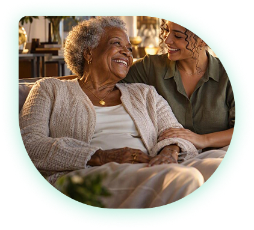
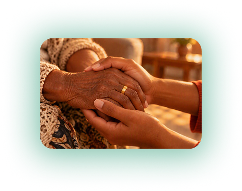

Organização
Centralize as informações dos residentes e facilite o dia a dia da equipe.
A Kairós Health Tech une tecnologia e cuidado para tornar a gestão das instituições de longa permanência mais organizada, acessível e eficiente.
Conheça nossa solução
Centralize as informações dos residentes e facilite o dia a dia da equipe.
Dados sempre disponíveis, de forma rápida e segura.
Mais controle, eficiência e melhores decisões para a instituição.
A Kairós Health Tech nasceu da percepção de que a tecnologia pode ser uma grande aliada na organização das informações e no apoio ao trabalho de quem cuida. Nosso propósito é contribuir para uma gestão mais eficiente e para um cuidado mais humano.
Saiba mais sobre a Kairós